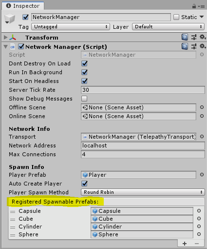

Spawning Game Objects
In Unity, you usually “spawn” (that is, create) new game objects with Instantiate. However, in Mirror, the word “spawn” means something more specific. In the server-authoritative model of the Mirror, to “spawn” a game object on the server means that the game object is created on clients connected to the server, and is managed by the spawning system.
Once the game object is spawned using this system, state updates are sent to clients whenever the game object changes on the server. When Mirror destroys the game object on the server, it also destroys it on the clients. The server manages spawned game objects alongside all other networked game objects, so that if another client joins the game later, the server can spawn the game objects on that client. These spawned game objects have a unique network instance ID called “netId” that is the same on the server and clients for each game object. The unique network instance ID is used to route messages set across the network to game objects, and to identify game objects.
When the server spawns a game object with a Network Identity component, the game object spawned on the client has the same “state”. This means it is identical to the game object on the server; it has the same Transform, movement state, and (if Network Transform and SyncVars are used) synchronized variables. Therefore, client game objects are always up-to-date when Mirror creates them. This avoids issues such as game objects spawning at the wrong initial location, then reappearing at their correct position when a state update arrives.
The Network Manager before trying to register it with the Network Manager.
To register a Prefab with the Network Manager in the Editor, select the Network Manager game object, and in the Inspector, navigate to the Network Manager component. Click the triangle next to Spawn Info to open the settings, then under Registered Spawnable Prefabs, click the plus (+) button. Drag and drop Prefabs into the empty field to assign them to the list.

Spawning Without Network Manager
For more advanced users, you may find that you want to register Prefabs and spawn game objects without using the Network Manager component.
To spawn game objects without using the Network Manager, you can handle the Prefab registration yourself via script. Use the ClientScene.RegisterPrefab method to register Prefabs to the Network Manager.
using UnityEngine;
using Mirror;
public class MyNetworkManager : MonoBehaviour
{
public GameObject treePrefab;
// Register prefab and connect to the server
public void ClientConnect()
{
ClientScene.RegisterPrefab(treePrefab);
NetworkClient.RegisterHandler<ConnectMessage>(OnClientConnect);
NetworkClient.Connect("localhost");
}
void OnClientConnect(NetworkConnection conn, ConnectMessage msg)
{
Debug.Log("Connected to server: " + conn);
}
}
In this example, you create an empty game object to act as the Network Manager, then create and attach the MyNetworkManager script (above) to that game object. Create a prefab that has a Network Identity component attached to it, and drag that onto the treePrefab slot on the MyNetworkManager component in the Inspector. This ensures that when the server spawns the tree game object, it also creates the same kind of game object on the clients.
Registering prefabs ensures that there is no stalling or loading time for creating the Asset.
For the script to work, you also need to add code for the server. Add this to the MyNetworkManager script:
public void ServerListen()
{
NetworkServer.RegisterHandler<ConnectMessage>(OnServerConnect);
NetworkServer.RegisterHandler<ReadyMessage>(OnClientReady);
if (NetworkServer.Listen(7777))
Debug.Log("Server started listening on port 7777");
}
// When client is ready spawn a few trees
void OnClientReady(NetworkConnection conn, ReadyMessage msg)
{
Debug.Log("Client is ready to start: " + conn);
NetworkServer.SetClientReady(conn);
SpawnTrees();
}
void SpawnTrees()
{
int x = 0;
for (int i = 0; i < 5; ++i)
{
GameObject treeGo = Instantiate(treePrefab, new Vector3(x++, 0, 0), Quaternion.identity);
NetworkServer.Spawn(treeGo);
}
}
void OnServerConnect(NetworkConnection conn, ConnectMessage msg)
{
Debug.Log("New client connected: " + conn);
}
The server does not need to register anything, as it knows what game object is being spawned (and the asset ID is sent in the spawn message). The client needs to be able to look up the game object, so it must be registered on the client.
When writing your own network manager, it’s important to make the client ready to receive state updates before calling the spawn command on the server, otherwise they won’t be sent. If you’re using Mirror’s built-in Network Manager component, this happens automatically.
For more advanced uses, such as object pools or dynamically created Assets, you can use the ClientScene.RegisterSpawnHandler method, which allows callback functions to be registered for client-side spawning. See documentation on Custom Spawn Functions for an example of this.
If the game object has a network state like synchronized variables, then that state is synchronized with the spawn message. In the following example, this script is attached to the tree Prefab:
using UnityEngine;
using Mirror;
class Tree : NetworkBehaviour
{
[SyncVar]
public int numLeaves;
public override void OnStartClient()
{
Debug.Log("Tree spawned with leaf count " + numLeaves);
}
}
With this script attached, you can change the numLeaves variable and modify the SpawnTrees function to see it accurately reflected on the client:
void SpawnTrees()
{
int x = 0;
for (int i = 0; i < 5; ++i)
{
GameObject treeGo = Instantiate(treePrefab, new Vector3(x++, 0, 0), Quaternion.identity);
Tree tree = treeGo.GetComponent<Tree>();
tree.numLeaves = Random.Range(10,200);
Debug.Log("Spawning leaf with leaf count " + tree.numLeaves);
NetworkServer.Spawn(treeGo);
}
}
Attach the Tree script to the treePrefab script created earlier to see this in action.
Constraints
- A NetworkIdentity must be on the root game object of a spawnable Prefab. Without this, the Network Manager can’t register the Prefab.
- NetworkBehaviour scripts must be on the same game object as the NetworkIdentity, not on child game objects
Game Object Creation Flow
The actual flow of internal operations that takes place for spawning game objects is:
- Prefab with Network Identity component is registered as spawnable.
- game object is instantiated from the Prefab on the server.
- Game code sets initial values on the instance (note that 3D physics forces applied here do not take effect immediately).
NetworkServer.Spawnis called with the instance.- The state of the SyncVars on the instance on the server are collected by calling
OnSerializeon [Network Behaviour] components. - A network message of type
ObjectSpawnis sent to connected clients that includes the SyncVar data. OnStartServeris called on the instance on the server, andisServeris set totrue- Clients receive the
ObjectSpawnmessage and create a new instance from the registered Prefab. - The SyncVar data is applied to the new instance on the client by calling OnDeserialize on Network Behaviour components.
OnStartClientis called on the instance on each client, andisClientis set totrue- As game play progresses, changes to SyncVar values are automatically synchronized to clients. This continues until game ends.
NetworkServer.Destroyis called on the instance on the server.- A network message of type
ObjectDestroyis sent to clients. OnNetworkDestroyis called on the instance on clients, then the instance is destroyed.
Player Game Objects
Player game objects in the HLAPI work slightly differently to non-player game objects. The flow for spawning player game objects with the Network Manager is:
- Prefab with
NetworkIdentityis registered as thePlayerPrefab - Client connects to the server
- Client calls
AddPlayer, network message of typeMsgType.AddPlayeris sent to the server - Server receives message and calls
NetworkManager.OnServerAddPlayer - game object is instantiated from the Player Prefab on the server
NetworkManager.AddPlayerForConnectionis called with the new player instance on the server- The player instance is spawned - you do not have to call
NetworkServer.Spawnfor the player instance. The spawn message is sent to all clients like on a normal spawn. - A network message of type
Owneris sent to the client that added the player (only that client!) - The original client receives the network message
OnStartLocalPlayeris called on the player instance on the original client, andisLocalPlayeris set to true
Note that OnStartLocalPlayer is called after OnStartClient, because it only happens when the ownership message arrives from the server after the player game object is spawned, so isLocalPlayer is not set in OnStartClient.
Because OnStartLocalPlayer is only called for the client’s local player game object, it is a good place to perform initialization that should only be done for the local player. This could include enabling input processing, and enabling camera tracking for the player game object.
Spawning Game Objects with Client Authority
To spawn game objects and assign authority of those game objects to a particular client, use NetworkServer.Spawn, which takes as an argument the NetworkConnection of the client that is to be made the authority.
For these game objects, the property hasAuthority is true on the client with authority, and OnStartAuthority is called on the client with authority. That client can issue commands for that game object. On other clients (and on the host), hasAuthority is false.
Objects spawned with client authority must have LocalPlayerAuthority set in their NetworkIdentity.
For example, the tree spawn example above can be modified to allow the tree to have client authority like this (note that we now need to pass in a NetworkConnection game object for the owning client’s connection):
void SpawnTrees(NetworkConnection conn)
{
int x = 0;
for (int i = 0; i < 5; ++i)
{
GameObject treeGo = Instantiate(treePrefab, new Vector3(x++, 0, 0), Quaternion.identity);
Tree tree = treeGo.GetComponent<Tree>();
tree.numLeaves = Random.Range(10,200);
Debug.Log("Spawning leaf with leaf count " + tree.numLeaves);
NetworkServer.Spawn(treeGo, conn);
}
}
The Tree script can now be modified to send a command to the server:
public override void OnStartAuthority()
{
CmdMessageFromTree("Tree with " + numLeaves + " reporting in");
}
[Command]
void CmdMessageFromTree(string msg)
{
Debug.Log("Client sent a tree message: " + msg);
}
Note that you can’t just add the CmdMessageFromTree call into OnStartClient, because at that point the authority has not been set yet, so the call would fail.